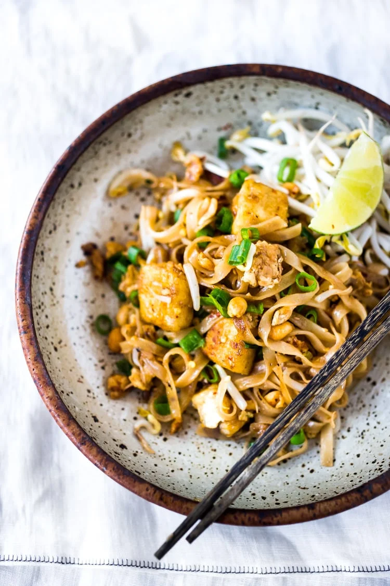

Pad Thai Recipe

How to make savory, delicious Pad Thai!
Pad thai is a delicious noodle dish that is stir fried with your favorite choice of meat such as beef, chicken,
or shrimp. Mix a number of sauces along with garnishes to top off this perfect savory dish!
Ingredients:
- 8 oz choice of protein: beef, chicken, or shrimp
- 4 oz rice noodles
- 3 tbsp fish and soy sauce
- 3 tbsp brown sugar
- 3 tbsp rice vinegar
- 2 eggs
- Spring onions, peanuts, and lime
Steps:
- Soak rice noodles in boiling water for 7-8 minutes. Drain water when noodles are pliable but not overly
soft.
- Whisk 2 eggs together in a bowl with a pinch of salt.
- Mix fish sauce, soy sauce, brown sugar, and rice vinegar in a small bowl.
- Chop spring onions for garnish.
- Slice up (or peel if using shrimp) choice of protein and cook in frying pan. Season generously with salt and
pepper until almost ready.
- Mix in noodles, whisked eggs, and sauce. Stir fry until all ingredients are mixed evenly.
- Lastly, garnish with spring onions, peanuts, and sprinkle of lime on top of everything.
- ENJOY!